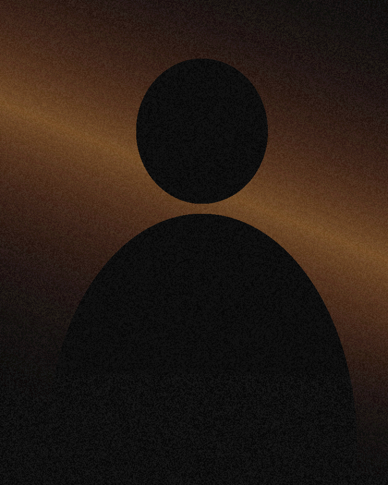
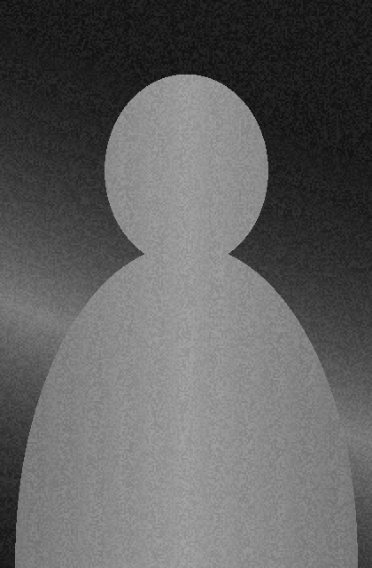
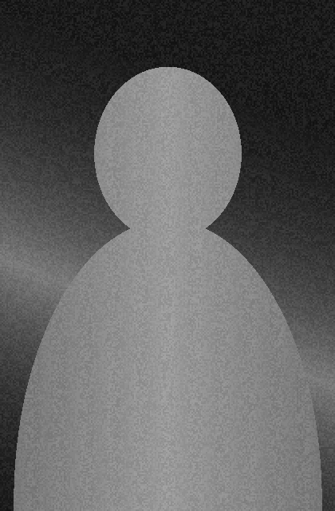
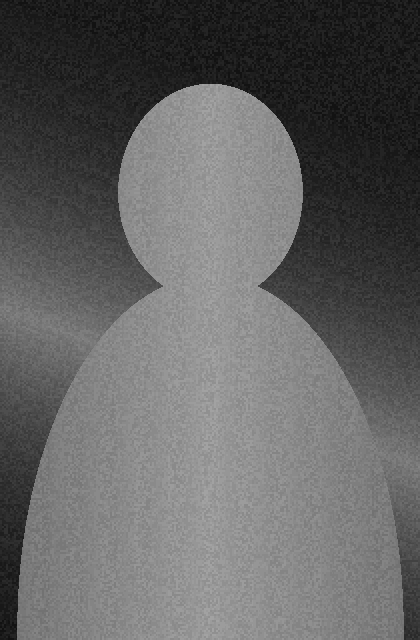
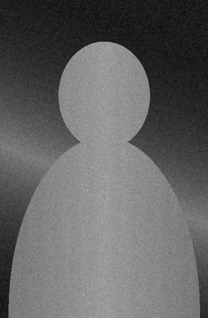
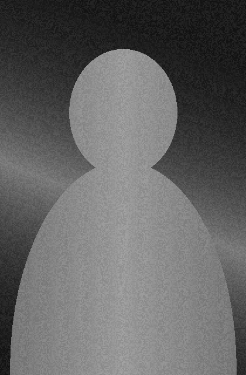
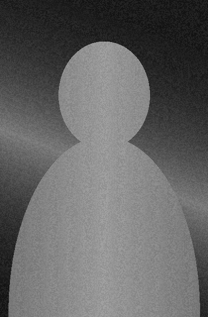

Viralidad · Contenido · IA aplicada
Jhei
Trujillo
Hago que te vean y que te recuerden.

DisponibleMarcas y creadores con los que he trabajado
-

Marca 1 -

Marca 2 -

Marca 3 -

Marca 4 -

Marca 5 -

Marca 6
Sobre Jhei Trujillo
@usuario
Soy Jhei Trujillo. Estudio por qué un video explota y otro no, y convierto esa respuesta en pasos que cualquiera puede repetir. Creo contenido, enseño a crearlo y construyo herramientas de IA para producirlo más rápido.
Llevo años años publicando en internet. Mis videos acumulan vistas vistas y he formado a alumnos personas en talleres y programas. Nada de lo que enseño es teoría: lo pruebo primero en mis propias cuentas y recién después lo comparto.
Mi misión es que nadie se quede invisible por no saber usar las herramientas que ya tiene a mano. Ayudo a creadores, emprendedores y equipos de marketing a publicar con constancia y a usar la IA como aliada, no como atajo. Tú traes la idea; yo te doy el sistema.